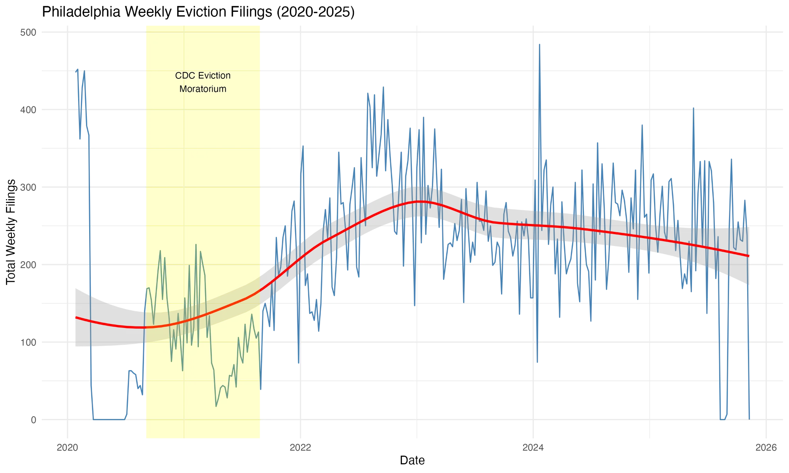
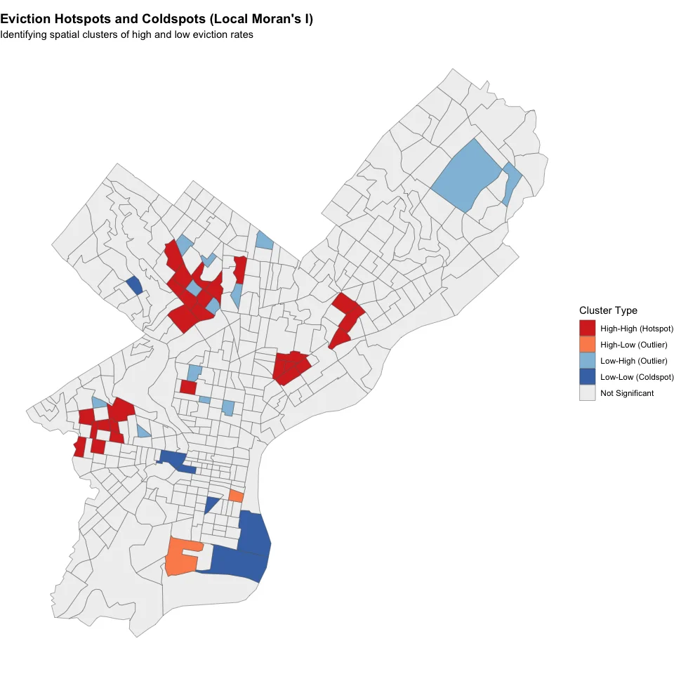
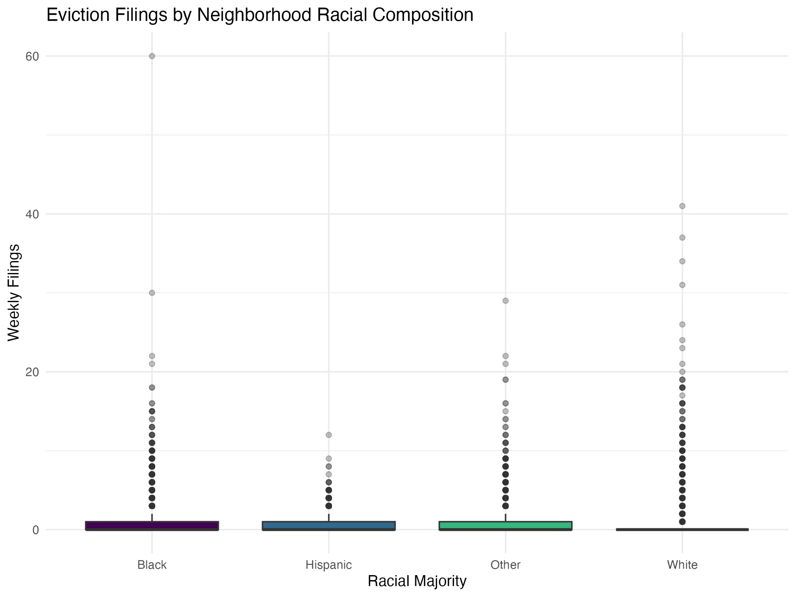
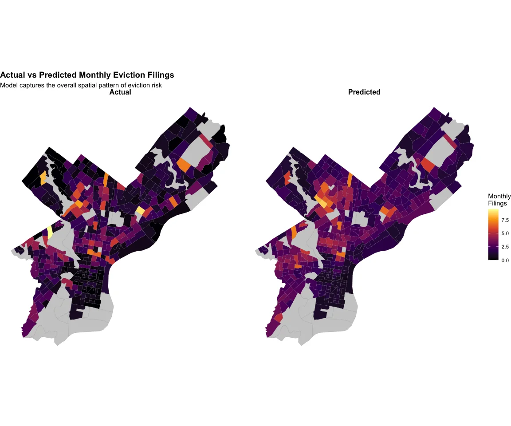
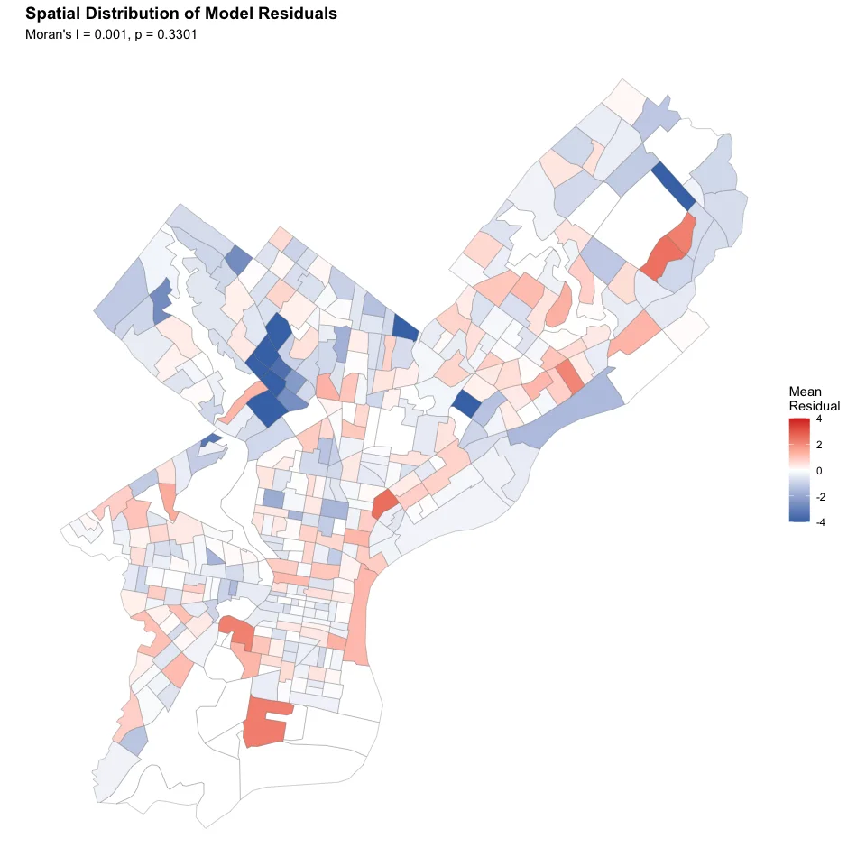
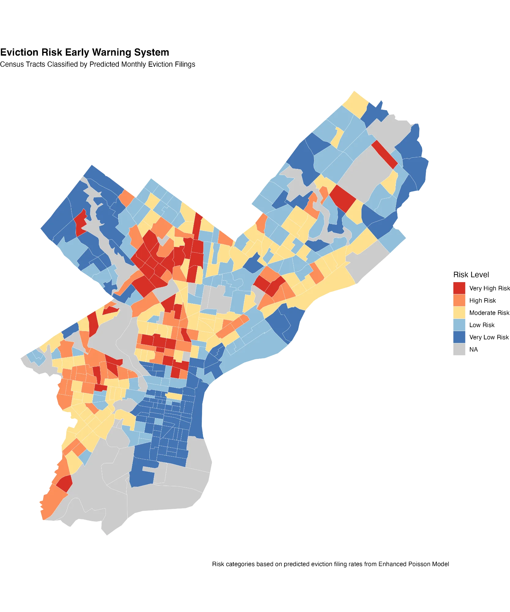
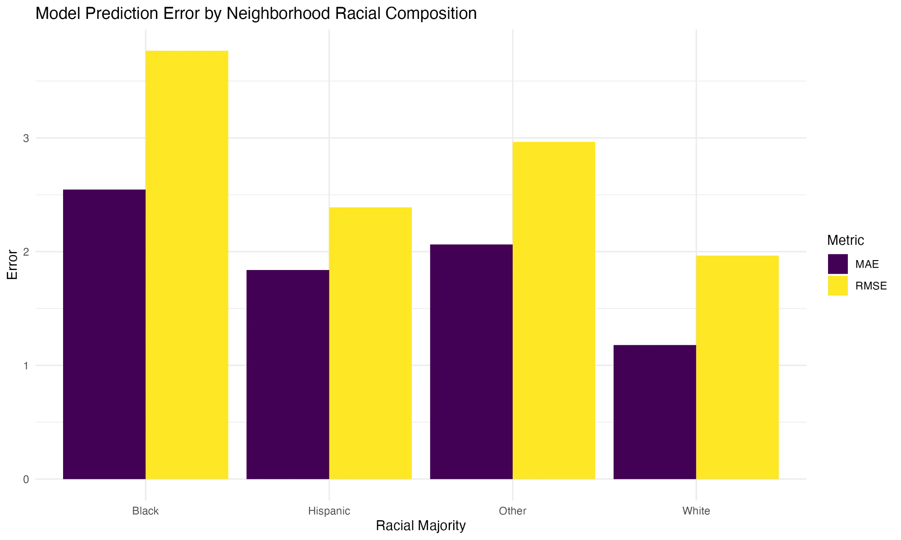

An Early Warning System for the Housing Authority
2025-12-07
The numbers are staggering:
But many evictions are preventable — with timely intervention
Can we predict which neighborhoods will have the most evictions next month?
If we can identify high-risk areas before evictions happen, we can:
Goal: Intervene before the crisis, not after
Eviction Records
Neighborhood Data (Census)
311 Complaints
Why 311? Early warning sign — tenants report problems before eviction happens
| Metric | Weekly | Monthly |
|---|---|---|
| Zero proportion | 68.4% | 34% |
| Observations | 114,534 | 26,082 |
Monthly aggregation reduces zero-inflation — creating a more tractable modeling problem while preserving meaningful variation.

Yellow = CDC moratorium period. After it ended, evictions surged back — but predictably.

Hotspots (Red): North Philly, West Philly, Southwest | Coldspots (Blue): Center City, Far Northeast

Majority-Black neighborhoods have more outliers with very high eviction counts.
| Model | Variables | McFadden’s R² |
|---|---|---|
| Baseline | Only past filings (Lag1, Lag2). | 0.14 |
| Full | + ACS, 311, race, Spatial pressure (neighbors),CDC moratorium | 0.23 |
| Enhanced | + Hotspot features, month effects, Poverty × Race,Spatial spillover × Renters % | 0.24 |
| Model | MAE | RMSE | Correlation |
|---|---|---|---|
| Baseline | 1.92 | 2.49 | 0.285 |
| Full Poisson | 1.82 | 2.49 | 0.368 |
| Neg. Binomial | 1.89 | 2.95 | 0.312 |
| Enhanced | 1.78 | 2.41 | 0.442 |
Lower MAE/RMSE = better. Higher correlation = better.

Model captures the overall spatial pattern of eviction risk across Philadelphia.

Moran’s I = 0.001, p = 0.33 — No significant spatial autocorrelation in residuals! ✓
We CAN:
We CAN’T:
Bottom line: Good enough to prioritize resources, not precise enough to replace human judgment

Red/Orange areas = Priority for intervention

Model error is higher in majority-Black neighborhoods — we need to monitor this.
Use this map to send:
Update predictions to:
This tool supports — not replaces:
Data & Model
Ethics & Mitigation
Evictions are predictable — past patterns tell us where future problems will be
They cluster geographically — focus resources on hotspots
Racial disparities persist even after controlling for income
This tool helps prevent evictions by targeting help before the crisis
Thank you!
Data Sources: Eviction Lab, Census ACS, Philadelphia 311
Philadelphia Eviction Prediction Model | MUSA 5080